Misión
Crear videojuegos con identidad propia, que mezclen acción, humor y cultura urbana, y que cualquier jugador pueda disfrutar desde el primer minuto.
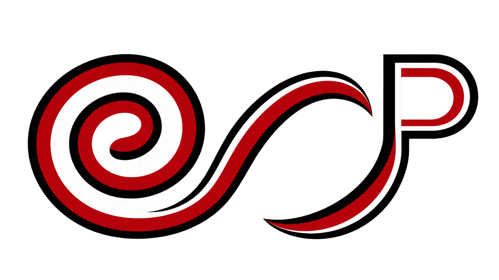
presenta
Recorre el Madrid zombi sobre un skate y salva la ciudad.
Somos ECP, un equipo de cinco personas dedicado al diseño y desarrollo de videojuegos.
Jugar la demo Descubrir el juego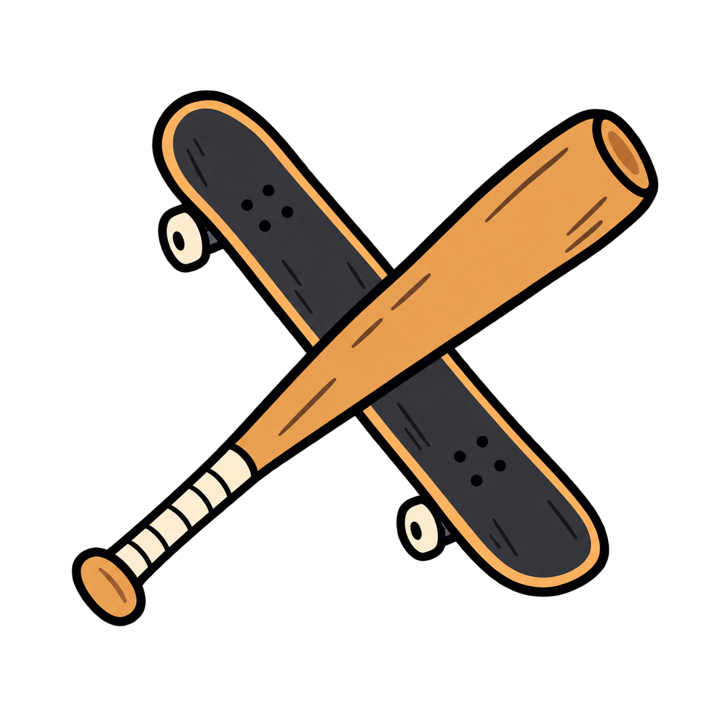
Crear videojuegos con identidad propia, que mezclen acción, humor y cultura urbana, y que cualquier jugador pueda disfrutar desde el primer minuto.
Convertirnos en un estudio independiente reconocido por sus mundos con personalidad, y llevar nuestros juegos a plataformas como Steam e Itch.io.
ECP nace en la URJC como un equipo de cinco estudiantes de diseño y desarrollo de videojuegos. La idea de THE LAST CURE surgió de una pregunta: ¿y si Madrid se llenara de zombis y la única salvación fuera cruzar la ciudad en skate?
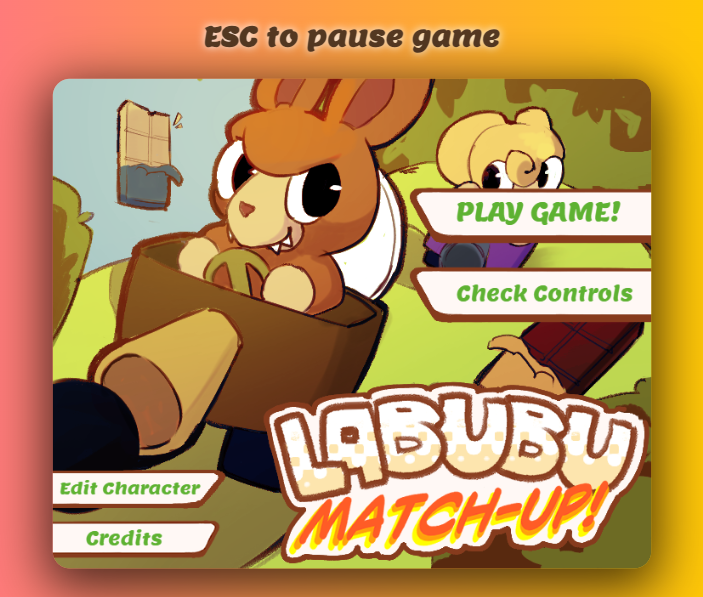
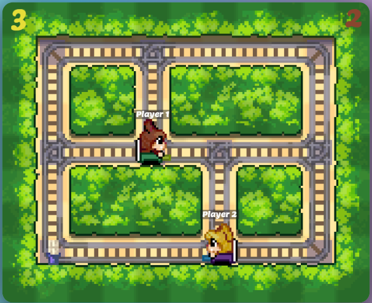
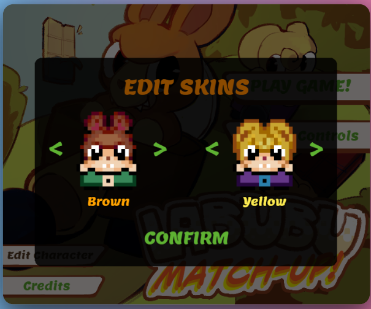
.jpeg)
.jpeg)
.jpeg)
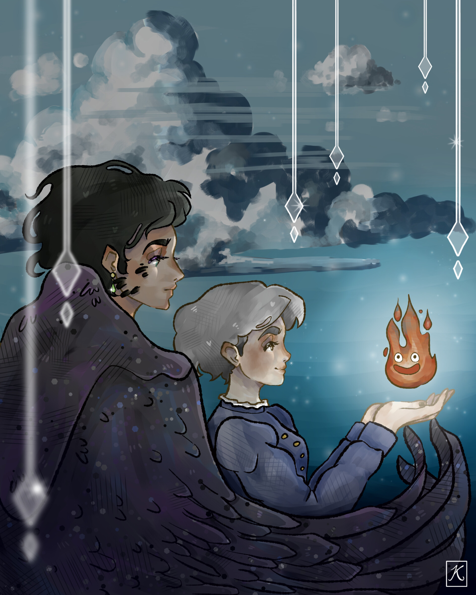
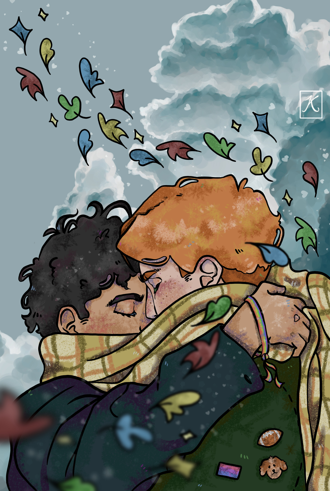
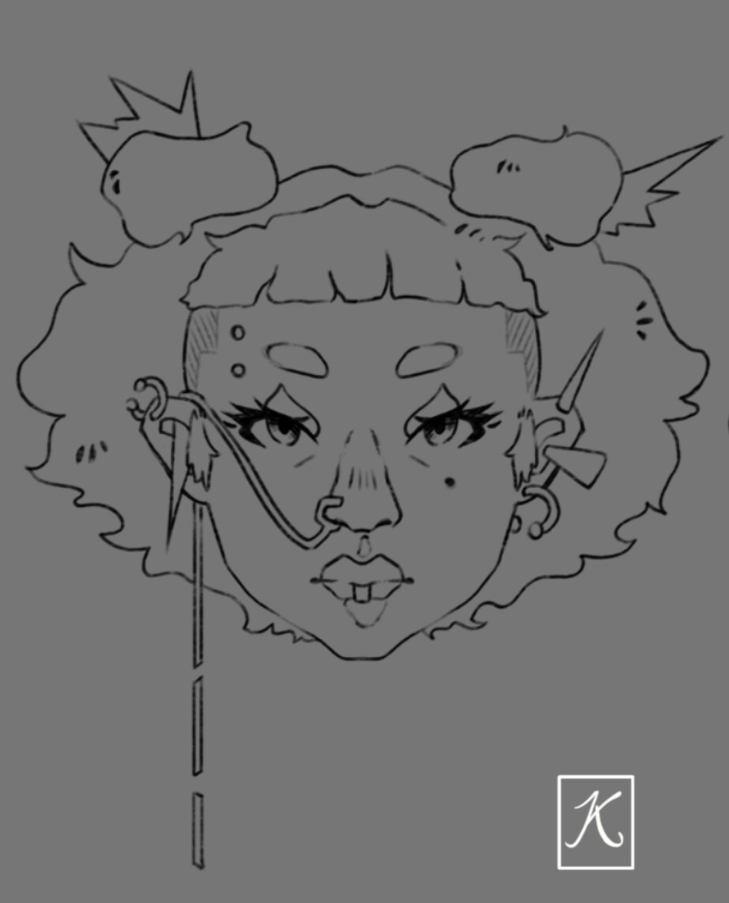
.jpeg)
.jpeg)
.jpeg)
.jpeg)
.jpeg)
Si ves esto desde un dispositivo móvil o tablet, prueba nuestro juego en el PC
THE LAST CURE es un juego 3D de acción ambientado en un Madrid postapocalíptico. Aroa recorre sus calles sobre un skate, se enfrenta a hordas de zombis y debe llegar a la torre del Palacio Real para activar la cura que creó su padre.
Movimiento con skate y combate con bate, usando también el entorno para no ser rodeado.
Un recorrido por lugares reconocibles de Madrid, con campamentos de supervivientes donde descansar, mejorar el skate y descubrir la historia.
Hordas de zombis, obstáculos y enemigos. La vida se recupera con comida típica madrileña, como los bocadillos de calamares.
Uno de los enemigos de Aroa entre las hordas de zombis del Madrid postapocalíptico.
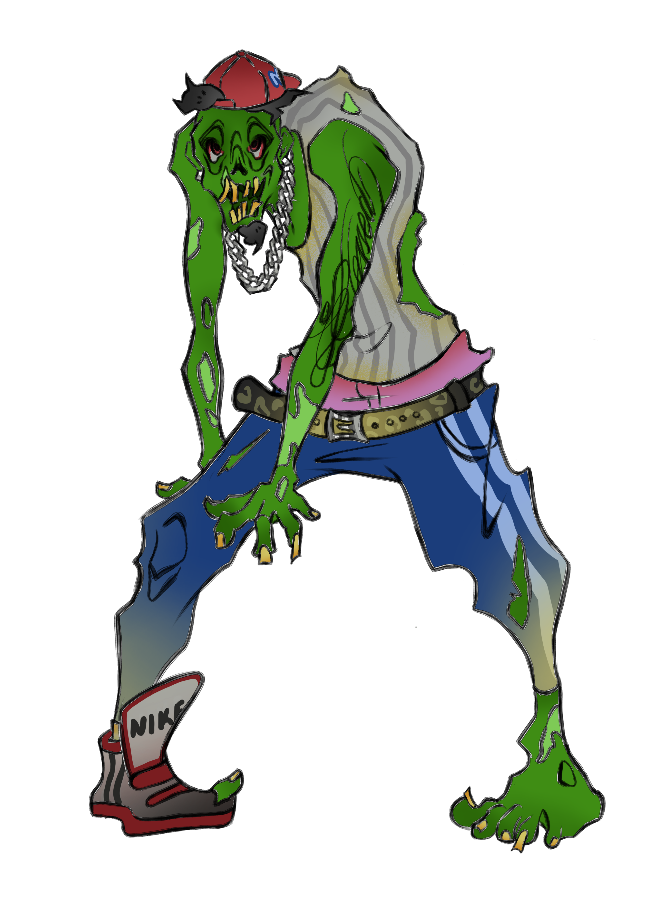
Una de las enemigas de Aroa entre las hordas de zombis del Madrid postapocalíptico.
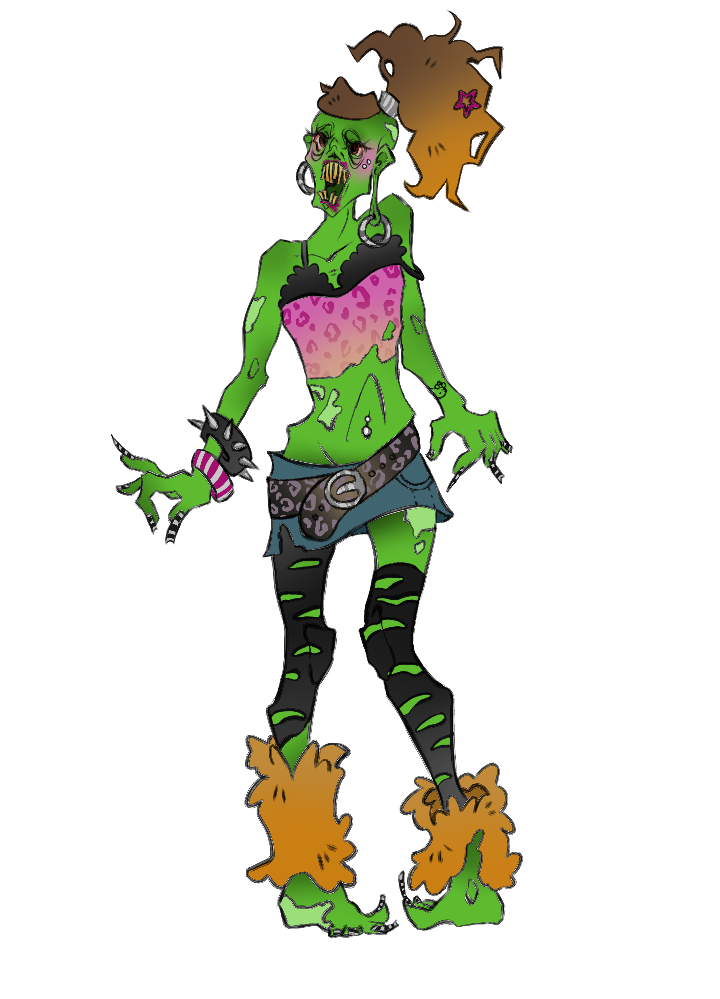
Se mueve con su skate y se defiende con el bate, usando también el entorno para no ser rodeada. Debe llegar a la torre del Palacio Real para activar la cura que creó su padre.
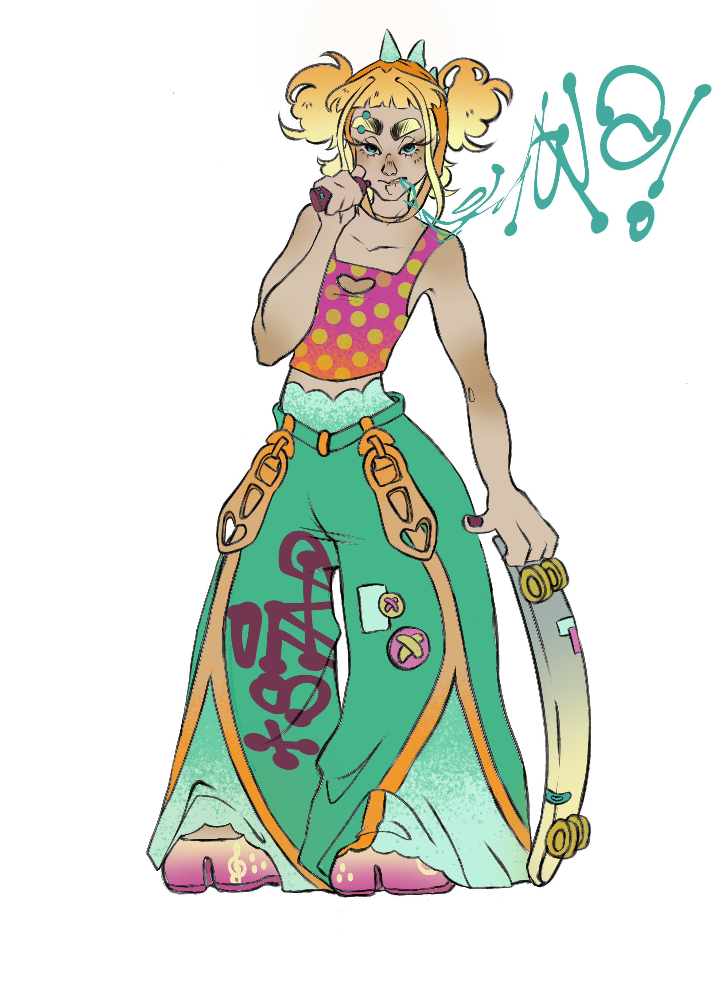
Definimos el concepto, la historia de Aroa y el tono del juego. Primer prototipo con movimiento básico sobre el skate y primeros bocetos de personajes.
Implementamos el combate con el bate, la vida del personaje y los primeros zombis con comportamiento sencillo.
Modelado y texturizado de Aroa, Saray y Jhontan, shader de cel shading y montaje del primer tramo del escenario inspirado en Madrid.
Ajuste de controles, corrección de errores, música y efectos de sonido, y preparación de la demo jugable para Itch.io.
Jugadores de 16 a 30 años aficionados a la acción, el humor y la estética urbana, que juegan en PC y siguen contenido de videojuegos indie en YouTube, Instagram y X.
Demo gratuita en Itch.io, tráiler y vídeos de proceso en YouTube, publicaciones en redes sociales con el arte de los personajes y presentación en eventos y festivales de videojuegos indie.
| Juego | Similitud | Qué nos diferencia |
|---|---|---|
| Jet Set Radio | Cel shading, skate y estética urbana muy marcada. | Mundo postapocalíptico con zombis y un Madrid reconocible. |
| Dead Rising | Zombis en masa, humor y armas improvisadas. | Movimiento rápido sobre skate y una protagonista con misión personal. |
| Dying Light | Recorrer una ciudad infestada y descansar en refugios. | Tono más desenfadado y estilo visual ilustrado, no realista. |
Unity y C#: controlador del skate, combate con el bate, vida del personaje y comportamiento de los zombis. Código versionado en GitHub y escrito en Visual Studio Code.
Cel shading con contornos negros y texturas pintadas a mano. Personajes diseñados en ibisPaint X y modelados en Blender con geometría low poly.
Música urbana de ritmo rápido y efectos como el rodar del skate, los golpes de bate y los gruñidos de los zombis, integrados en Unity según lo que ocurre en pantalla.
La compilación en Itch.io se quedaba bloqueada al iniciar; optimizamos la compresión y el tamaño de memoria para que cargue en navegador sin cortes.
Varios zombis se quedaban bloqueados entre sí al perseguir a Aroa; ajustamos sus radios de evasión y prioridades de ruta alrededor de los obstáculos.
Las normales de algunos modelos low poly rompían los contornos negros; suavizamos los grupos de sombreado en Blender y afinamos el grosor del outline.
En las calles estrechas de Madrid la cámara se metía dentro de las fachadas; añadimos un sistema de colisión con raycast para acercarla automáticamente.
Al juntarse demasiados zombis bajaba el rendimiento; reducimos draw calls, optimizamos materiales y desactivamos enemigos fuera de distancia.
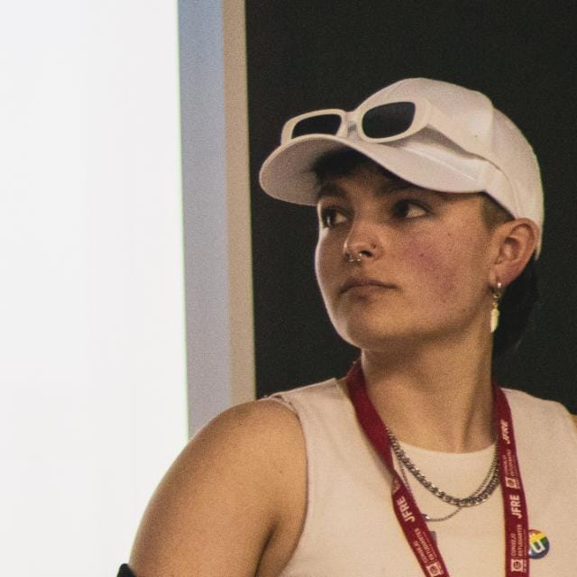
Programadora web y perfil creativo de narrativa, edición de vídeo y maquetación de memorias y GDDs.
RR.SS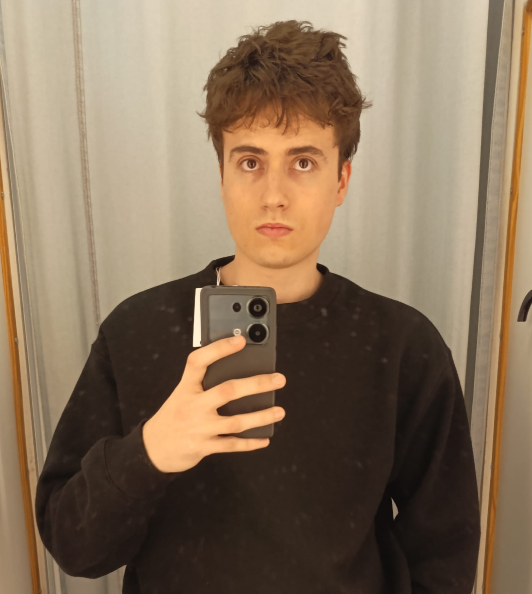
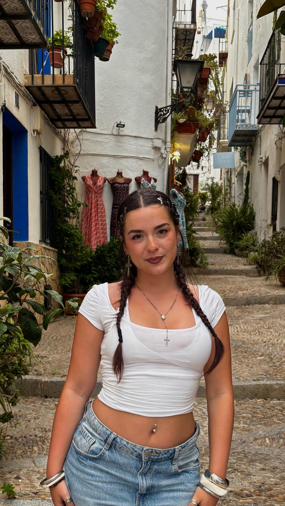
Diseño de personajes, concept art, caracterización, modelado 3D y texturizado de personajes para animación.
RR.SS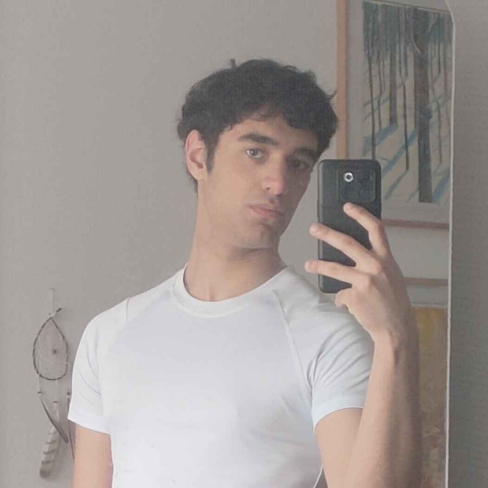
Programador en C#, editor de multimedia, desarrollador de UI y UX y creativo en narrativa y guionización del proyecto.
RR.SS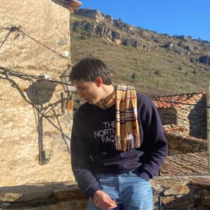
Explora el arte del juego organizado por categorías: personajes, escenarios y armas.
Concept art y diseño principal de la protagonista con su estilo urbano y skate.
Diseño del zombi masculino de las hordas de Madrid, con texturas pintadas a mano.
Diseño de la zombi femenina con acabado low poly y contornos cel shading.

Tramo urbano inspirado en el centro madrileño con barricadas y rampas para el skate.

Zona segura donde Aroa descansa, mejora el skate y avanza en la historia.

Destino final de la aventura, donde se encuentra la torre para activar la cura.

Arma principal de Aroa para abrirse paso entre las hordas sin bajar del skate.

Medio de transporte personalizable para esquivar zombis y encadenar impulsos.

Consumible típico madrileño repartido por el mapa para recuperar salud.